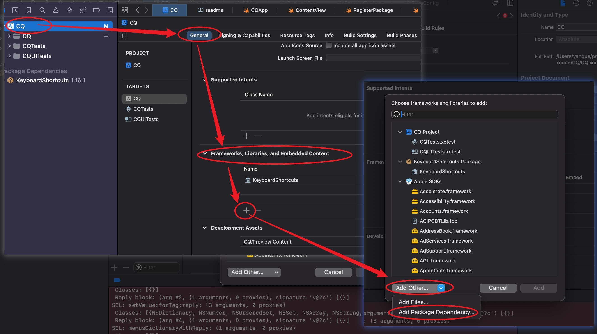

2023-02-20
增加依赖
修改于: 2023-02-20- 方案一 - Xcode:
选择菜单栏的 File > Add Package Dependency , 然后输入仓库URL
参考: https://developer.apple.com/documentation/xcode/adding-package-dependencies-to-your-app
如果没找到的话(不知道为什么我就没有这个项), 就去项目的 General, 下拉找到 Frameworks, Libraries, and Embedded Content,
如图:
然后添加依赖即可
效果就是在根目录下增加一个 Package.resolved 文件:
{ "pins" : [ { "identity" : "keyboardshortcuts", "kind" : "remoteSourceControl", "location" : "https://github.com/sindresorhus/KeyboardShortcuts.git", "state" : { "revision" : "c252200141e4abaecf30c14ea474dc009f56d553", "version" : "1.16.1" } } ], "version" : 2 }- 方案二 - 官方包(文件)管理器:
项目根创建 Package.swift 定义依赖项和版本
内容例(主要是两个 dependencies 以及 头部的版本定义):
// swift-tools-version: 5.8 // The swift-tools-version declares the minimum version of Swift required to build this package. import PackageDescription let package = Package( name: "CQ", dependencies: [ // 指定 tag .package(url: "https://github.com/sindresorhus/KeyboardShortcuts.git", from: "1.16.1"), // 或者指定 branch // .package(url: "https://github.com/sindresorhus/KeyboardShortcuts.git", branch: "main") ], targets: [ // Targets are the basic building blocks of a package, defining a module or a test suite. // Targets can depend on other targets in this package and products from dependencies. .executableTarget( name: "CQ", dependencies: [ .product(name: "KeyboardShortcuts", package: "keyboardshortcuts") ], path: "CQ"), ] )定义好之后执行 swift build 即可
注解
Xcode编辑器可能会提示 PackageDescription 找不到 的报错, 忽略即可
创建发布可参考: https://www.jianshu.com/p/44560fd214d2
部分属性说明:
- name: 一般就是产品/项目名
- dependencies: 依赖路径,
支持多种路径类型:
- git 源 + 确定的版本号
- git 源 + 版本区间
- git 源 + Commit 号
- git 源 + 分支名
- 本地路径
- targets: 目标, 可以有多个
- targets.name: name
- targets.dependencies: 与上面的依赖不一样, 可以依赖上面 Package.Dependency 的东西或者依赖另一个 target。 所以这里只需要写 Package 或者 Target 的名字字符串（Target.Dependency 这个枚举也实现了 ExpressibleByStringLiteral）。
- targets.path: target 的路径，默认为 [PackageRoot]/Sources/[TargetName]
- targets.source: 源文件路径，默认 TargetName 文件夹下都是源代码文件，会递归搜索
- targets.exclude: 需要被排除在外的文件/文件夹，这些文件不会参与编译。
- targets.publicHeadersPath: C 家族库的公共头文件地址。
- targets.swiftSettings: 定义一个用于特定环境（例如 Debug）的宏，需要设置的话可以去 API 上研究下
- targets.linkerSettings: 用于链接一些系统库
这个我失败了不知道为什么
- 方案三 - Pod管理器:
类似于Java的Maven
安装配置使用参考 包管理工具pod